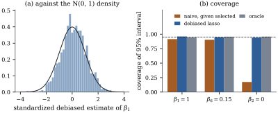

28.5 Post-selection and debiased inference
This section turns to confidence intervals and tests
for a single coefficient
28.5.1. Why intervals after selection fail
The least squares interval of Theorem 12.1.1
has coverage
Leeb and Pötscher (2006) proved that this cannot be repaired by estimating the distribution of the post-selection estimator, which depends on the unknown coefficients in a way that no estimator can track uniformly. One can change the target (the selected model’s coefficients, conditional on the selection) or the estimator. This section changes the estimator.
The lasso estimate itself is no better as a centre
for an interval. On the event of Theorem 28.4.2,
Eq. 28.4.1 shows
that it equals least squares on
28.5.2. The debiased lasso
Write
Given a lasso estimate
Its
The correction adds to the lasso a multiple of the
residual correlations
In the setting of Section 28.3, let
(a) (Decomposition.)
(b) (Remainder.)
(c) (Variance.) If
(d) (Asymptotic normality.) Consider a sequence of such problems with
and the interval
Proof.
(a) Substitute
(b) The
(c) The columns of
(d) Write
The theorem separates what the design must deliver (a
28.5.3. Constructing the approximate inverse
The remaining question is how to find a
For a fixed
(a)
(b) if
(c) the
Proof. The optimality conditions Eq. 28.3.2 for
the node-wise regression say that
Part (c) shows what the debiased lasso is. By the
Frisch–Waugh–Lovell theorem (Theorem 6.6.2), the
least squares coefficient of
Remark (Sketch: when the assumptions of part
(d) hold). This is a sketch; the full arguments
are in van de Geer, Bühlmann, Ritov and Dezeure (2014)
and Javanmard and Montanari (2014). Suppose the rows of
Warning. The theorem covers one
prespecified coefficient, or a fixed finite set.
Coefficients chosen because they look large
bring back the selection problem, and simultaneous
intervals need a multiplicity correction such as
Bonferroni (Theorem 13.4.1). With
moderate
28.5.4. A simulation
Take
- the naive interval: least squares
on the selected variables and its
- the debiased interval
- the oracle
The results are in Figure
28.5.1. For the null coefficient
On the strong coefficient the lasso’s average error
is
The debiased intervals are wider than the oracle’s
(
The second cost is a remainder bias:

import numpy as np
from scipy import stats
def soft(z, t):
"""Soft thresholding S(z, t) = sign(z) max(|z| - t, 0)."""
return np.sign(z) * np.maximum(np.abs(z) - t, 0.0)
def lasso_cd(X, Y, lam, B=None, tol=1e-9, max_sweeps=2000):
"""Minimize ||y - X b||^2 / (2n) + lam ||b||_1 for every column y of Y, by coordinate descent."""
n, p = X.shape
Y = Y.reshape(n, -1)
B = np.zeros((p, Y.shape[1])) if B is None else B.copy()
R = Y - X @ B # residuals, one column per response
scale = np.sum(X ** 2, axis=0) / n
active = np.arange(p)
for sweep in range(max_sweeps):
change = 0.0
for j in active:
z = X[:, j] @ R / n + scale[j] * B[j]
new = soft(z, lam) / scale[j]
d = new - B[j]
if np.any(d != 0):
R -= np.outer(X[:, j], d)
B[j] = new
change = max(change, np.max(np.abs(d)))
if change < tol:
if len(active) == p: # converged over all coordinates
break
active = np.arange(p) # check every coordinate once more
else:
active = np.flatnonzero(np.any(B != 0, axis=1)) if sweep % 5 else np.arange(p)
return B
def nodewise_row(X, j, lam_j):
"""Row theta_j of Theta from the lasso of x_j on the other columns, and tau_j^2."""
n, p = X.shape
others = np.delete(np.arange(p), j)
gamma = lasso_cd(X[:, others], X[:, j], lam_j)[:, 0]
z = X[:, j] - X[:, others] @ gamma # lasso residual of x_j on the rest
tau2 = X[:, j] @ z / n
theta = np.zeros(p)
theta[j] = 1.0
theta[others] = -gamma
return theta / tau2, tau2
def debiased_interval(X, Y, B, j, theta, level=0.95):
"""Debiased estimate of beta_j and its normal-theory interval, one per column of Y."""
n = X.shape[0]
R = Y - X @ B
b = B[j] + theta @ X.T @ R / n # one-step correction
sigma_hat = np.sqrt(np.sum(R ** 2, axis=0) / (n - np.sum(B != 0, axis=0)))
G = X.T @ X / n
se = sigma_hat * np.sqrt(theta @ G @ theta / n)
z = stats.norm.ppf((1 + level) / 2)
return b, b - z * se, b + z * se
def toeplitz_design(rng, n, p, rho):
idx = np.arange(p)
L = np.linalg.cholesky(rho ** np.abs(idx[:, None] - idx[None, :]))
X = rng.normal(size=(n, p)) @ L.T
return X / np.sqrt(np.sum(X ** 2, axis=0) / n)
rng = np.random.default_rng(2850)
n, p, sigma = 200, 400, 1.0
X = toeplitz_design(rng, n, p, rho=0.5)
beta = np.zeros(p)
beta[[0, 5, 10, 15]] = [1.0, 0.15, -1.0, 0.15]
lam = sigma * np.sqrt(2 * np.log(p) / n)
targets = {"strong": 0, "weak": 5, "null": 1}
Ys = (X @ beta)[:, None] + sigma * rng.normal(size=(n, 200))
Bs = lasso_cd(X, Ys, lam)
for name, j in targets.items():
theta, tau2 = nodewise_row(X, j, 0.1 * np.sqrt(2 * np.log(p) / n))
b, lo, hi = debiased_interval(X, Ys, Bs, j, theta)
print(f"{name:6s}: lasso bias {Bs[j].mean() - beta[j]:+.3f}, debiased bias {b.mean() - beta[j]:+.3f},"
f" coverage {np.mean((lo <= beta[j]) & (beta[j] <= hi)):.3f}")28.5.5. Other routes to valid inference
Other approaches answer different questions.
Sample splitting (Wasserman and Roeder
2009) selects on one half of the data and fits on the
other (Exercise (B1)).
Selective inference (Lee, Sun, Sun and
Taylor 2016) conditions on the lasso having chosen the
reported model, a union of polyhedra in
28.5.6. Exercises
A. Check your understanding
Suppose
Solution.
On the event of Theorem 28.4.2,
with
B. Practice
(Sample splitting.) Split the observations
into halves
Solution. The errors in
In Lemma 28.5.2,
show that
Solution.
C. Going deeper
The two quantities in Theorem 28.5.1
pull against each other:
(a) Suppose
(b) Let
(c) Show that for
(d) Read the result against Theorem 28.5.1(b) and (c), and against the tuning reported in
Solution.
(a)
(b)
(c) Write
(d) A relaxation of the constraint from
Why one correction and not two? Write
(a) Show that
(b) With
(c) Show that under the conditions of Theorem 28.5.1(d) with
(d) Show that when
Solution.
(a) Substituting
(b) The
(c) The one-step remainder is controlled by taking
(d) Then
The moral is that Eq. 28.5.1 is not
the first step of a convergent scheme. It is the one
step whose error the design can be made to control, and
the noise term of (a) also changes as soon as